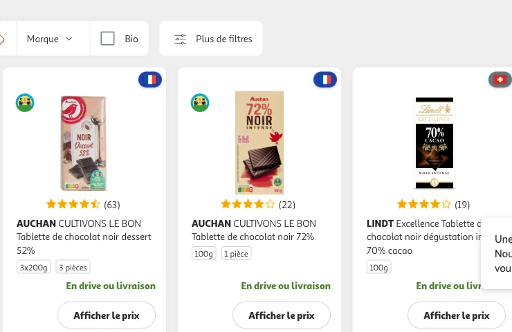
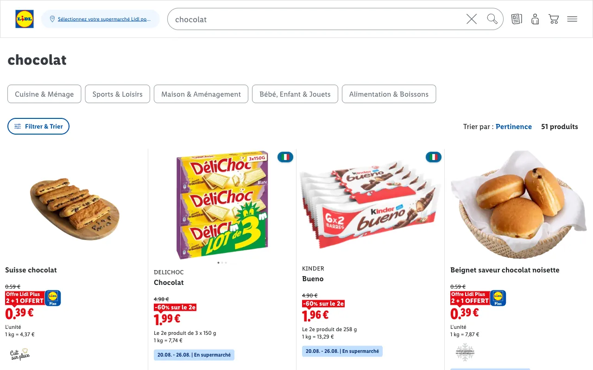

Camembert de Normandie AOP au lait cru 250 g
3,45 €
Extension navigateur · Chrome & Firefox
Cocarde ajoute un badge d’origine — FR, EU, US — sur les produits des drives Carrefour, Intermarché, Auchan, Leclerc et Lidl. Sans quitter la page, sans rien configurer.
Camembert de Normandie AOP au lait cru 250 g
3,45 €
Pâte à tartiner noisettes et cacao 750 g
5,49 €
Shampooing antipelliculaire classic 285 ml
4,95 €
Reconstitution exacte du badge de l’extension — survolez ou touchez une pastille.
Fonctionne sur les drives que vous utilisez déjà
Deux dimensions
Un emballage tricolore ne dit ni qui encaisse, ni où le produit a été fait. Cocarde mesure les deux, séparément.
La nationalité de l’entreprise qui possède la marque — groupes propriétaires inclus, au-delà du marketing tricolore. 3 700 marques référencées, mises à jour quotidiennement.
Head & Shoulders → Procter & Gamble, États-Unis.
Le lieu physique de production, extrait des mentions « Origine : France », des labels AOP, AOC et IGP, et des données OpenFoodFacts.
Le même shampooing → fabriqué en Belgique.
Les deux comptent. Une marque américaine peut produire en France, une marque française à l’étranger. Cocarde affiche chaque dimension avec son indice de confiance et sa source.
En conditions réelles
Captures d’écran réelles, simplement recadrées, prises sur les grilles produits d’Auchan Drive et de Lidl.


Prise en main
Chrome ou Firefox, gratuit. Edge suivra.
Aucun compte, aucun réglage : l’extension reconnaît les pages de votre drive et travaille en silence.
Le drapeau donne la marque ; le survol révèle la fabrication, le groupe propriétaire et l’indice de confiance.
Confidentialité
L’analyse se fait dans votre navigateur. La liste de vos courses n’en sort jamais.
Pas d’inscription, pas d’analytics. Seule requête sortante : une fiche OpenFoodFacts quand l’origine n’est pas trouvée localement.
Base de marques publique, mise à jour quotidienne. Fabrication issue en partie d’OpenFoodFacts (© les contributeurs, licence ODbL).
Code source publié sous licence MIT · Politique de confidentialité
FAQ
Oui, entièrement. Pas de version premium, pas de contrepartie cachée : le code est open source, sous licence MIT.
D’une base publique de 3 700 marques et de leurs groupes propriétaires (incluant des données dérivées du projet DeTrumpez-vous, sous licence GPL-3.0), d’OpenFoodFacts pour la fabrication, et du texte des fiches produits — mentions d’origine et labels AOP, AOC, IGP.
Quand l’origine est déduite du texte du produit plutôt que d’une source vérifiée, l’indice de confiance baisse et le badge l’annonce honnêtement. Chaque dimension affiche son indice et sa source dans l’infobulle.
Chaque infobulle contient un lien « Signaler une erreur » qui prépare un e-mail avec le produit et le verdict affiché. Les corrections alimentent la mise à jour quotidienne de la base.
Chrome et Firefox. Edge suivra (le format Chrome y est accepté tel quel). Firefox Android est à l’étude.
Disponible sur Chrome et Firefox
Un badge discret, une information sourcée, zéro friction. Ajoutez Cocarde et faites vos courses en connaissance de cause.
Gratuit · Open source · Aucune donnée collectée